Apache NetBeans
Apache NetBeansLatest release
NetBeans Platform Ribbon Bar Integration Tutorial
| This tutorial needs a review. You can edit it in GitHub following these contribution guidelines. |
Microsoft Office introduced the concept of a ribbon bar, which Kirill Grouchnikov made available to Java applications via his Flamingo library:
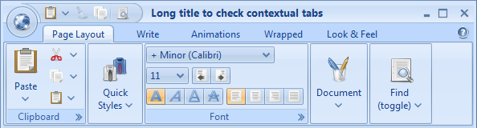
Based on this work, Chris Bohme from PinkMatter Solutions created an extensible ribbon bar for NetBeans Platform applications. The work done by Chris Bohme has been open sourced and forms the basis of this tutorial.
| The instructions that follow focus on a lot of XML tags. None of these need to be typed by hand. Instead, as described in the section entitled "Using Annotations to Register the NetBeans Ribbon Bar", you do not need to use any XML tags at all since these can be generated at compile-time by a NetBeans Platform annotation processor. However, it helps to understand how the Ribbon integration works and therefore we begin by looking at XML tags. Once you are familiar with them, you can simply forget about them, and use the annotations instead. |
Getting to Know the Ribbon Bar
Chris Bohme extrapolated the NetBeans ribbon bar from an application named Maltego, created by himself and others at PinkMatter Solutions. Maltego is an artificial intelligence application. Take note of the toolbar in the screenshot of Maltego below:
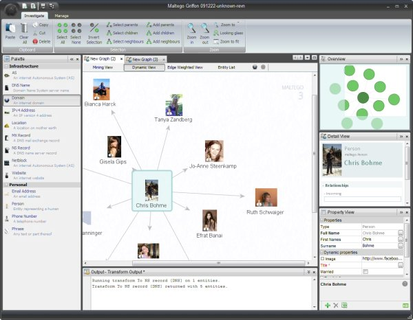
Now, watch Chris Bohme’s introduction to the NetBeans ribbon bar integration here:
| The YouTube video above stops unexpectedly. Attempts are being made to provide the full video, though the main points of the PinkMatter integration are already addressed in the above. |
Setting Up the NetBeans Ribbon Bar
The NetBeans ribbon bar is open sourced on java.net. In this section, you download the sources that make up the ribbon bar integration. Taken together, the sources form an application in themselves. When you run them, you see a basic NetBeans Platform application that includes the ribbon bar. You are then shown how to set up your own application to use the ribbon bar as a platform for integration into your own application.
If you want to try out these instructions on an actual application prior to trying them out on your own sources, you can use the NetBeans Platform Paint Application, which you can get from the Samples category in the New Project wizard (Ctrl-Shift-N). That is the example application that will be referred to throughout this tutorial.
-
Check out the NetBeans ribbon bar integration here:
-
You should now have these folders on disk:
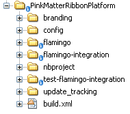
-
Open the application into NetBeans IDE. You should now see this:
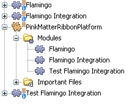
-
Run the application and explore the ribbon bar:
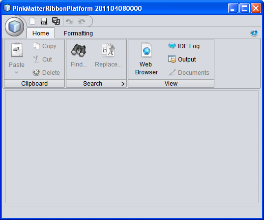
Above, you see the initial appearance of the demo application. It consists of the NetBeans Platform modules, plus a module wrapping the Flamingo JARs, plus a module providing NetBeans Platform integration code for the Flamingo JARs, plus a test module showing how to use the other two modules to create a ribbon bar.
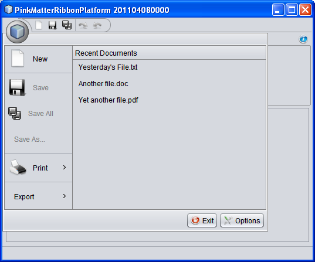
Above, you see the application menu. It is shown when you click on the big icon top left in the application. Each action in the application menu can expand, as shown above, depending on whether a folder is registered or just an individual file.
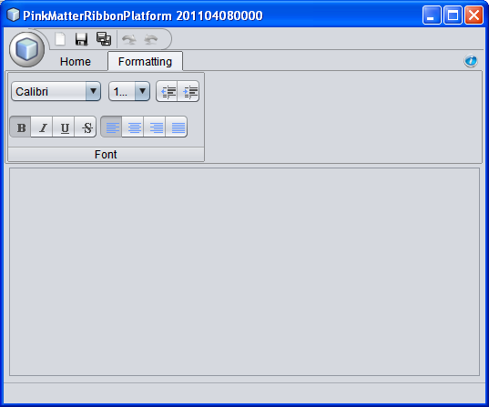
Above, you see a composite panel, constructed from the Ribbon API, as shown towards the end of this tutorial, and registered in the application via the layer.xml file.
-
Now let’s set up our own application to use the ribbon bar. Right-click your own application, go to Properties, and then choose Libraries. You should now see this:
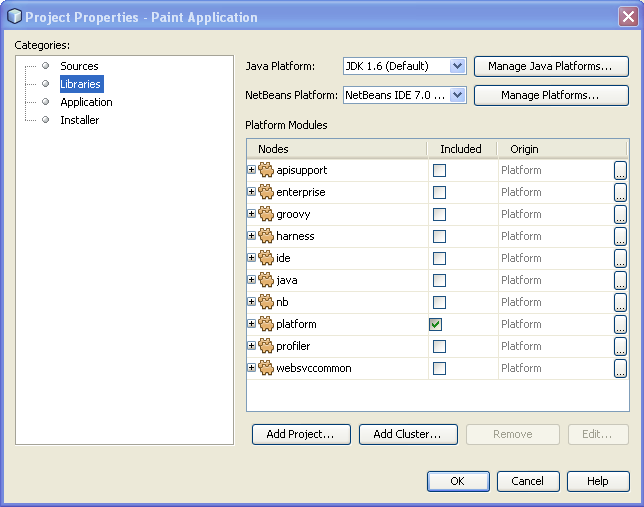
Depending on the modules you’re using in your own application, you will have different clusters included in the list above. For the NetBeans Paint Application, which is the sample application used in this tutorial, only the "platform" cluster is included.
-
Click Add Cluster and then browse to the top folder of the platform that you checked out:
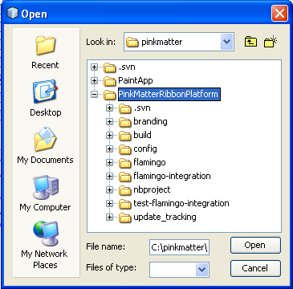
Click OK and you will see that you have the ribbon platform as a new cluster, with the two modules selected that you need:
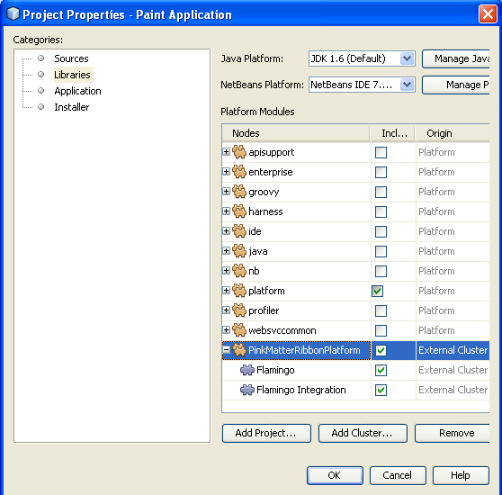
Click OK to exit the Project Properties dialog.
-
Run the application and you should see the application menu, without any content, with all the existing menus and toolbars removed:
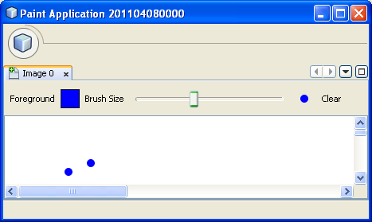
You have now set up your own application to use the PinkMatter ribbon integration. In the next section, you will add actions from your application to the application menu, task bar, and task panes of the ribbon.
Using the NetBeans Ribbon Bar Features
Now that our ribbon bar is set up, we will use its features.
Application Menu
The application menu is one of the most visible differentiators of the ribbon bar. It is accessed via the large button in the top left of the application. In this section, you learn how to add new items to the application menu.
-
In the
layer.xmlof the Paint module in the Paint Application, copy the content of the Menu/File folder into a new folder named Ribbon/AppMenu:
<folder name="Ribbon">
<folder name="AppMenu">
<attr name="position" intvalue="0"/>
<file name="SaveAction.shadow">
<attr name="originalFile" stringvalue="Actions/File/org-openide-actions-SaveAction.instance"/>
<attr name="position" intvalue="100"/>
</file>
<file name="SeparatorAfterSave.instance">
<attr name="instanceClass" stringvalue="javax.swing.JSeparator"/>
<attr name="position" intvalue="110"/>
</file>
<file name="SeparatorBeforeExit.instance">
<attr name="instanceClass" stringvalue="javax.swing.JSeparator"/>
<attr name="position" intvalue="3990"/>
</file>
<file name="ExitAction.shadow">
<attr name="originalFile" stringvalue="Actions/File/org-netbeans-core-actions-SystemExit.instance"/>
<attr name="position" intvalue="4000"/>
</file>
</folder>
</folder>-
Run the application and you should see this:
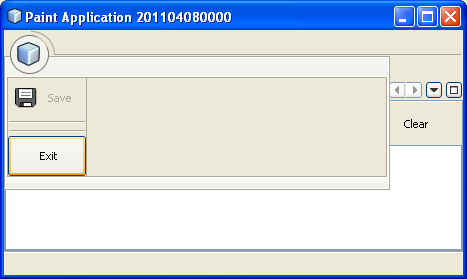
The icons used above and throughout this tutorial come from the sources you downloaded from Kenai. One of the modules contains a folder named "com.pinkmatter.test.flamingo.resources", which provides a very long list of icons that you can use for many of the most commonly used actions in your application.
-
It would be more idiomatic to place the Exit action, as well as an Options action, inside buttons within the application menu. That "AppMenuFooter" folder exists for that purpose Therefore, rewrite the layer entries above to these:
<folder name="Ribbon">
<folder name="AppMenu">
<attr name="position" intvalue="0"/>
<file name="SaveAction.shadow">
<attr name="originalFile" stringvalue="Actions/File/org-openide-actions-SaveAction.instance"/>
<attr name="position" intvalue="100"/>
</file>
</folder>
*<folder name="AppMenuFooter">
<file name="org-netbeans-core-actions-SystemExit.shadow">
<attr name="originalFile" stringvalue="Actions/File/org-netbeans-core-actions-SystemExit.instance"/>
<attr name="position" intvalue="100"/>
<attr name="iconBase" stringvalue="org/netbeans/paint/resources/Exit.png"/>
</file>
<file name="org-netbeans-modules-options-OptionsWindowAction.shadow">
<attr name="originalFile" stringvalue="Actions/Window/org-netbeans-modules-options-OptionsWindowAction.instance"/>
<attr name="position" intvalue="200"/>
<attr name="iconBase" stringvalue="org/netbeans/paint/resources/Tools.png"/>
</file>
</folder>*
</folder>-
Run the application again and you should see this:
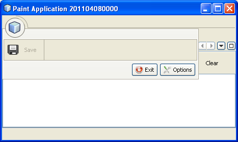
-
By creating a subfolder within Ribbon/AppMenu, you can register an action that expands to show the actions within its folder:
<folder name="Ribbon">
<folder name="AppMenu">
<file name="SaveAction.shadow">
<attr name="originalFile" stringvalue="Actions/File/org-openide-actions-SaveAction.instance"/>
<attr name="position" intvalue="100"/>
</file>
*<folder name="Print">
<attr name="position" intvalue="200"/>
<attr name="iconBase" stringvalue="org/netbeans/paint/resources/Print.png"/>
<folder name="Print Actions">
<file name="org-netbeans-modules-print-action-PageSetupAction.shadow">
<attr name="originalFile" stringvalue="Actions/File/org-netbeans-modules-print-action-PageSetupAction.instance"/>
<attr name="position" intvalue="100"/>
<attr name="description" bundlevalue="com.pinkmatter.test.flamingo.actions.Bundle#HINT_PageSetupAction"/>
<attr name="iconBase" stringvalue="org/netbeans/paint/resources/Config.png"/>
</file>
<file name="org-netbeans-modules-print-action-PrintAction.shadow">
<attr name="originalFile" stringvalue="Actions/File/org-netbeans-modules-print-action-PrintAction.instance"/>
<attr name="position" intvalue="600"/>
<attr name="iconBase" stringvalue="org/netbeans/paint/resources/Print.png"/>
<attr name="description" bundlevalue="com.pinkmatter.test.flamingo.actions.Bundle#HINT_PrintAction"/>
</file>
</folder>
</folder>*
<file name="org-netbeans-modules-options-OptionsWindowAction.shadow">
<attr name="originalFile" stringvalue="Actions/Window/org-netbeans-modules-options-OptionsWindowAction.instance"/>
<attr name="position" intvalue="200"/>
<attr name="iconBase" stringvalue="org/netbeans/paint/resources/Tools.png"/>
</file>
<file name="org-netbeans-core-actions-SystemExit.shadow">
<attr name="position" intvalue="300"/>
<attr name="originalFile" stringvalue="Actions/File/org-netbeans-core-actions-SystemExit.instance"/>
<attr name="iconBase" stringvalue="org/netbeans/paint/resources/Exit.png"/>
</file>
</folder>
<folder name="AppMenuFooter">
<file name="org-netbeans-core-actions-SystemExit.shadow">
<attr name="originalFile" stringvalue="Actions/File/org-netbeans-core-actions-SystemExit.instance"/>
<attr name="position" intvalue="100"/>
<attr name="iconBase" stringvalue="org/netbeans/paint/resources/Exit.png"/>
</file>
</folder>
</folder>-
Run the application again and you should see this:
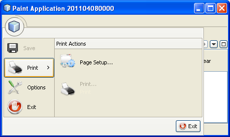
You have now used all the features of the ribbon bar’s application menu.
Task Bar
The task bar is the small toolbar at the top of the application, above the task panes. Each action registered in the task base causes a toolbar button to be created. Folders registered in the task bar cause drop-down buttons to be created from which the actions that are children of the folder can be invoked.
-
Rewrite the whole Ribbon folder to the following:
<folder name="Ribbon">
<folder name="TaskBar">
<file name="SaveAction.shadow">
<attr name="originalFile" stringvalue="Actions/File/org-openide-actions-SaveAction.instance"/>
<attr name="position" intvalue="100"/>
</file>
<folder name="Print">
<attr name="iconBase" stringvalue="org/netbeans/paint/resources/Print.png"/>
<attr name="position" intvalue="200"/>
<folder name="Print Actions">
<attr name="iconBase" stringvalue="org/netbeans/paint/resources/Print.png"/>
<file name="org-netbeans-modules-print-action-PageSetupAction.shadow">
<attr name="originalFile" stringvalue="Actions/File/org-netbeans-modules-print-action-PageSetupAction.instance"/>
<attr name="position" intvalue="100"/>
<attr name="description" bundlevalue="com.pinkmatter.test.flamingo.actions.Bundle#HINT_PageSetupAction"/>
<attr name="iconBase" stringvalue="org/netbeans/paint/resources/Config.png"/>
</file>
<file name="org-netbeans-modules-print-action-PrintAction.shadow">
<attr name="originalFile" stringvalue="Actions/File/org-netbeans-modules-print-action-PrintAction.instance"/>
<attr name="position" intvalue="600"/>
<attr name="iconBase" stringvalue="org/netbeans/paint/resources/Print.png"/>
<attr name="description" bundlevalue="com.pinkmatter.test.flamingo.actions.Bundle#HINT_PrintAction"/>
</file>
</folder>
<folder name="Print Options">
<attr name="iconBase" stringvalue="org/netbeans/paint/resources/Tools.png"/>
<file name="org-netbeans-modules-options-OptionsWindowAction.shadow">
<attr name="originalFile" stringvalue="Actions/Window/org-netbeans-modules-options-OptionsWindowAction.instance"/>
<attr name="position" intvalue="200"/>
<attr name="iconBase" stringvalue="org/netbeans/paint/resources/Tools.png"/>
</file>
</folder>
</folder>
<file name="org-netbeans-core-actions-SystemExit.shadow">
<attr name="position" intvalue="300"/>
<attr name="originalFile" stringvalue="Actions/File/org-netbeans-core-actions-SystemExit.instance"/>
<attr name="iconBase" stringvalue="org/netbeans/paint/resources/Exit.png"/>
</file>
</folder>
</folder>-
You should now see the task bar with the following content:
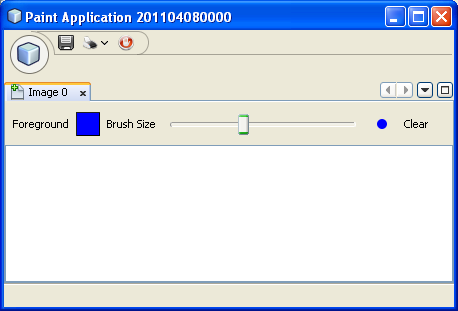
A drop-down button is created because you registered a folder:
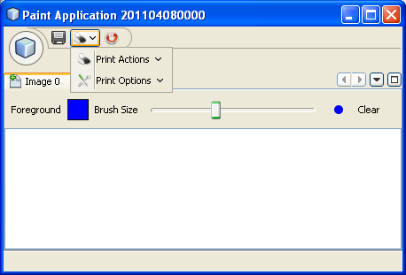
Each drop-down button shows the actions registered as files with the folder:
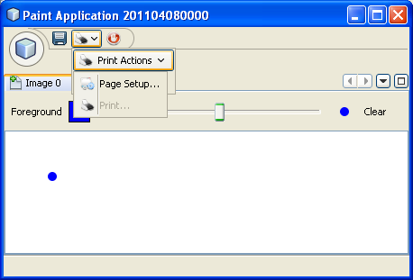
You have now used the ribbon task bar in your application.
Task Pane
The task pane is a pane within the tabbed toolbar of the application. Actions are registered into a task pane via the Ribbon/TaskPanes folder. Each folder within Ribbon/TaskPanes defines a new pane. For example, "Ribbon/TaskPanes/Tools" defines a new task pane named "Tools". Each task pane is further split into separate containers. For example, "Ribbon/TaskPanes/Tools/Use" could be a folder for registering actions that can be used, while "Ribbon/TaskPanes/Tools/Change" could be a container for changing or customizing features relating to Tools in the application.
-
Rewrite the Ribbon folder in the
layer.xmlto the following:
<folder name="Ribbon">
<folder name="TaskPanes">
<folder name="Main">
<folder name="File">
<file name="SaveAction.shadow">
<attr name="originalFile" stringvalue="Actions/File/org-openide-actions-SaveAction.instance"/>
<attr name="position" intvalue="100"/>
</file>
</folder>
</folder>
<folder name="Tools">
<folder name="Use">
<attr name="position" intvalue="100"/>
<file name="org-netbeans-modules-print-action-PageSetupAction.shadow">
<attr name="originalFile" stringvalue="Actions/File/org-netbeans-modules-print-action-PageSetupAction.instance"/>
<attr name="position" intvalue="100"/>
<attr name="description" bundlevalue="com.pinkmatter.test.flamingo.actions.Bundle#HINT_PageSetupAction"/>
<attr name="iconBase" stringvalue="org/netbeans/paint/resources/Config.png"/>
</file>
<file name="org-netbeans-modules-print-action-PrintAction.shadow">
<attr name="originalFile" stringvalue="Actions/File/org-netbeans-modules-print-action-PrintAction.instance"/>
<attr name="position" intvalue="600"/>
<attr name="iconBase" stringvalue="org/netbeans/paint/resources/Print.png"/>
<attr name="description" bundlevalue="com.pinkmatter.test.flamingo.actions.Bundle#HINT_PrintAction"/>
</file>
</folder>
<folder name="Change">
<attr name="position" intvalue="200"/>
<file name="org-netbeans-modules-options-OptionsWindowAction.shadow">
<attr name="originalFile" stringvalue="Actions/Window/org-netbeans-modules-options-OptionsWindowAction.instance"/>
<attr name="position" intvalue="200"/>
<attr name="iconBase" stringvalue="org/netbeans/paint/resources/Tools.png"/>
</file>
</folder>
</folder>
</folder>
</folder>-
Run the application again and you should see this:
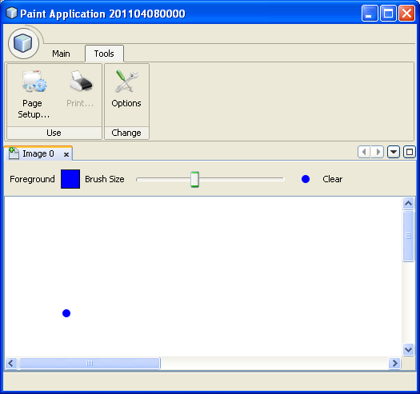
You have now used task panes in your ribbon bar to organize actions into a tabbed toolbar.
Help Button
The help button is always displayed top right in the ribbon bar.
-
Rewrite the Ribbon folder as follows:
<folder name="Ribbon">
<folder name="HelpButton">
<file name="org-netbeans-core-actions-AboutAction.instance">
<attr name="iconBase" stringvalue="org/netbeans/paint/resources/Info.png"/>
</file>
</folder>
</folder>-
Run the application again and you should see this, take note of the small button on the right of the application:
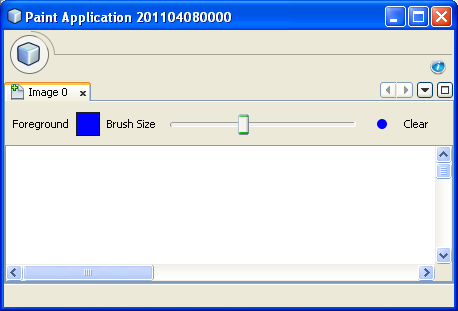
You now have used all the features of the ribbon bar in your own application.
Using Annotations to Register the NetBeans Ribbon Bar
None of the XML tags described in previous sections needs to be typed anywhere, nor do you even need to see any of it. Imagine that the Paint Application has a "BucketAction". This is how the action would be registered via annotations into the Ribbon folders shown above:
@ActionID(category = "Paint",
id = "org.paint.bucket.BucketAction")
@ActionRegistration(displayName = "#CTL_BucketAction", iconBase="org/paint/bucket/bucket.png")
@ActionReferences({
*@ActionReference(path = "Ribbon/AppMenu", position = 0),
@ActionReference(path = "Ribbon/AppMenuFooter", position = 0),
@ActionReference(path = "Ribbon/TaskBar", position = 0),
@ActionReference(path = "Ribbon/TaskPanes/Main/File", position = 0)*
})
@Messages("CTL_BucketAction=Bucket")
public final class BucketAction implements ActionListener {
@Override
public void actionPerformed(ActionEvent e) {
// TODO implement action body
}
}When the module is compiled, the annotations in bold above will cause the Ribbon folder to be created, as well as its subfolders, and register the action into them.
Creating Ribbon Tooltips
In this section, you learn how to create tooltips in the ribbon bar. The PinkMatter ribbon integration provides the attributes "description", "tooltipTitle", "tooltipFooter", and "tooltipFooterIcon" to define the content of predefined tooltip placeholders in the ribbon bar.
-
In the Actions folder, add the following attributes in bold to the definition of the Save action:
<folder name="Actions">
<folder name="File">
<file name="org-openide-actions-SaveAction.instance">
<attr name="instanceCreate" methodvalue="org.openide.awt.Actions.context"/>
<attr name="delegate" newvalue="org.openide.actions.SaveAction"/>
<attr name="selectionType" stringvalue="EXACTLY_ONE"/>
<attr name="surviveFocusChange" boolvalue="false"/>
<attr name="displayName" bundlevalue="org/openide/actions/Bundle#Save"/>
<attr name="noIconInMenu" boolvalue="false"/>
<attr name="iconBase" stringvalue="org/openide/resources/actions/save.png"/>
<attr name="type" stringvalue="org.openide.cookies.SaveCookie"/>
*<attr name="description" bundlevalue="org.netbeans.paint.Bundle#HINT_SaveAction"/>
<attr name="tooltipTitle" bundlevalue="org.netbeans.paint.Bundle#CTL_SaveActionTitle"/>
<attr name="tooltipFooter" bundlevalue="org.netbeans.paint.Bundle#HINT_HelpAction"/>
<attr name="tooltipFooterIcon" stringvalue="org/netbeans/paint/resources/Info.png"/>*
</file>
...
...
...-
Add the following keys to the
Bundle.propertiesfile in the main package, that is, theBundle.propertiesfile referred to in the XML tags above:
HINT_SaveAction=Save the image
HINT_HelpAction=If you still don't know whats going on, click the Help icon
CTL_SaveActionTitle=Save Image-
Run the application again and you should see this, when you hover with the mouse over the Save button:
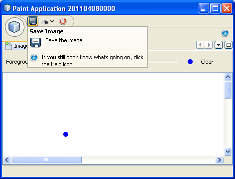
You have now learned how to define tooltips in the ribbon bar.
Using the Ribbon API
The NetBeans ribbon bar integration enables you to use the Ribbon APIs, as follows:
package org.netbeans.paint;
import com.pinkmatter.api.flamingo.ResizableIcons;
import javax.swing.JComboBox;
import org.pushingpixels.flamingo.api.common.CommandToggleButtonGroup;
import org.pushingpixels.flamingo.api.common.JCommandButton;
import org.pushingpixels.flamingo.api.common.JCommandButtonStrip;
import org.pushingpixels.flamingo.api.common.JCommandToggleButton;
import org.pushingpixels.flamingo.api.common.RichTooltip;
import org.pushingpixels.flamingo.api.common.icon.ResizableIcon;
import org.pushingpixels.flamingo.api.ribbon.JFlowRibbonBand;
import org.pushingpixels.flamingo.api.ribbon.JRibbonComponent;
public class FontRibbonBand extends JFlowRibbonBand {
public FontRibbonBand() {
super("Font", null);
JComboBox fontCombo = new JComboBox(new Object[]{
"Calibri ", "Columbus ",
"Consolas ", "Cornelius ",
"Cleopatra ", "Cornucopia ",
"Candella ", "Cambria "});
JRibbonComponent fontComboWrapper = new JRibbonComponent(fontCombo);
addFlowComponent(fontComboWrapper);
JComboBox sizeCombo = new JComboBox(new Object[]{"10 ","11 ","12 ","14 "});
JRibbonComponent sizeComboWrapper = new JRibbonComponent(sizeCombo);
addFlowComponent(sizeComboWrapper);
JCommandButtonStrip indentStrip = new JCommandButtonStrip();
JCommandButton indentLeftButton = new JCommandButton("",
getIcon("indent_left.gif"));
indentStrip.add(indentLeftButton);
JCommandButton indentRightButton = new JCommandButton("",
getIcon("indent_right.gif"));
indentStrip.add(indentRightButton);
addFlowComponent(indentStrip);
JCommandButtonStrip styleStrip = new JCommandButtonStrip();
JCommandToggleButton styleBoldButton = new JCommandToggleButton("",
getIcon("bold.gif"));
styleBoldButton.getActionModel().setSelected(true);
styleBoldButton.setActionRichTooltip(new RichTooltip("Bold", "Make the selected text bold"));
styleStrip.add(styleBoldButton);
JCommandToggleButton styleItalicButton = new JCommandToggleButton("",
getIcon("italics.gif"));
styleItalicButton.setActionRichTooltip(new RichTooltip("Italic", "Italicise the selected text"));
styleStrip.add(styleItalicButton);
JCommandToggleButton styleUnderlineButton = new JCommandToggleButton(
"", getIcon("underline.gif"));
styleUnderlineButton.setActionRichTooltip(new RichTooltip("Underline", "Underline the selected text"));
styleStrip.add(styleUnderlineButton);
JCommandToggleButton styleStrikeThroughButton = new JCommandToggleButton(
"", getIcon("strikethrough.gif"));
styleStrikeThroughButton.setActionRichTooltip(new RichTooltip("Strikethrough", "Strike the selected text"));
styleStrip.add(styleStrikeThroughButton);
addFlowComponent(styleStrip);
JCommandButtonStrip alignStrip = new JCommandButtonStrip();
CommandToggleButtonGroup alignGroup = new CommandToggleButtonGroup();
JCommandToggleButton alignLeftButton = new JCommandToggleButton("",
getIcon("justify_left.gif"));
alignLeftButton.getActionModel().setSelected(true);
alignGroup.add(alignLeftButton);
alignStrip.add(alignLeftButton);
JCommandToggleButton alignCenterButton = new JCommandToggleButton("",
getIcon("justify_center.gif"));
alignGroup.add(alignCenterButton);
alignStrip.add(alignCenterButton);
JCommandToggleButton alignRightButton = new JCommandToggleButton("",
getIcon("justify_right.gif"));
alignGroup.add(alignRightButton);
alignStrip.add(alignRightButton);
JCommandToggleButton alignFillButton = new JCommandToggleButton("",
getIcon("justify_justify.gif"));
alignGroup.add(alignFillButton);
alignStrip.add(alignFillButton);
addFlowComponent(alignStrip);
}
private static ResizableIcon getIcon(String name) {
return ResizableIcons.fromResource("org/netbeans/paint/resources/"+name);
}
}The above is registered in the layer.xml file as follows:
<folder name="Ribbon">
<folder name="TaskPanes">
<folder name="Formatting">
<file name="org-netbeans-paint-FontRibbonBand.instance"/>
</folder>
</folder>
</folder>Run the above and you should see this:
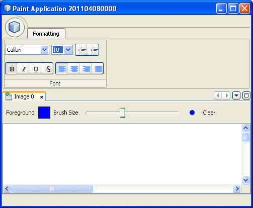
Customizing the Application Menu
In this section, you use the standard NetBeans Platform branding mechanism to change the texts and icon used in the application menu.
-
Switch to the Files window and create the folder structure below within the application’s "branding" folder:
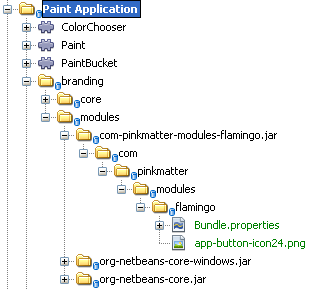
In other words, within "branding/modules", create this folder structure:
com-pinkmatter-modules-flamingo.jar/com/pinkmatter/modules/flamingoWithin that folder, create a file named Bundle.properties . Also, add an icon of 24x24 pixels, with the name "app-button-icon24.png".
-
In the
Bundle.propertiesfile that you created above, add the following key/value pairs:
LBL_AppMenuTitle=Main Menu
HINT_AppMenu=Click here to save, print or access other important features of the Paint Application
HINT_AppMenuHelp=Still don't get it? Click the Help icon-
Run the application again and you should see your icon used together with your texts, when you hover with the mouse over the application menu:
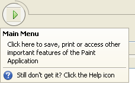
You have now learned how to customize the application menu.
Further Reading
This concludes the NetBeans Platform Ribbon Bar Integration Tutorial. This document has described how to integrate a ribbon bar into a NetBeans Platform application. For information about the ribbon bar, and other similar implementations, see the following resources: